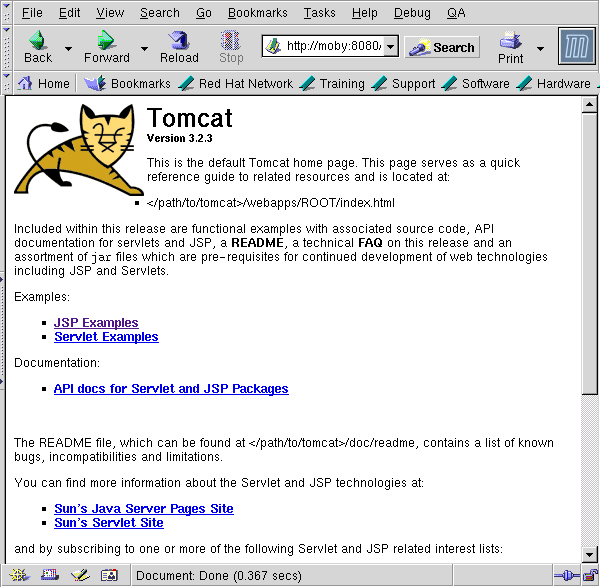

By now I'm sure many of you my have the impression that unless you know Java, your résumé is severely handicapped, and even if you are fluent in Java, increasingly employers will ask if you know Java Server Pages (JSPs), and/or servlets. Fortunately, there is a free application server for Java Server Pages, and the related Java Servlets, it is called called Jakarta-Tomcat (hereafter referred to simply as Tomcat). I decided to download and install it, documenting my experiences for reference. I set up Tomcat on a vintage Pentium 2/200 running SuSE 7.2, however it appears that the steps described here should work with any recent distribution, as long as Java can compile the source.
Installation of the applet server involves the downloading and compilation of several packages in addition to the obvious need for Java and Tomcat. The following packages are necessary:
| Package | Source |
|---|---|
| Java SDK 1.3.1 | Sun |
| XML Parser Library 1.1 | Sun |
| Secure Sockets for Java 1.0.2 | Sun |
| Java Servlet API 3.2.3 | Apache Foundation |
| Jakarta Ant 1.3 | Apache Foundation |
| Jakarta Tomcat 3.2.3 | Apache Foundation |
Installation of Java has been written up so frequently it's almost not worth repeating here, however for completeness I'll quickly run through the steps using RPM. I downloaded version 1.3 of the SDK (also known as the JDK) from the Java web site, but 1.4 is in Beta, and may be out by the time you read this. The notes for the Secure Sockets library indicate that 1.4 will include them, so the installation will be simplified somewhat.
For Linux, Sun's Java comes as a script wrapped around an RPM package, so that you must execute it and agree to the licensing before you get to actually install the RPM. After unpacking the shell script to yield an RPM, follow the standard installation as root.
moby:~ > sudo rpm -Uv jdk-1.3.1.i386.rpm
|
I modified my path to include the location of the JDK, on SuSE you are advised to edit /etc/profile.local to accomplish this, although on other distributions one might edit /etc/profile directly. Note also the environmental variable for $JAKARTA_HOME, and $TOMCAT_HOME, we can ignore them for now, but you will need them soon enough as part of the installation procedure, so it's easier to set them now. Note that I did not initially set CLASSPATH, although you may want or need to. You'll see below the steps I took to make sure that Java could find the libraries.
#!/bin/bash
JAVA_HOME=/usr/java/jdk1.3.1
JAKARTA_HOME=/opt/jakarta
ANT_HOME=$JAKARTA_HOME/jakarta-ant
TOMCAT_HOME=$JAKARTA_HOME/build/tomcat
PATH=$JAVA_HOME/bin:$PATH
export JAVA_HOME JAKARTA_HOME ANT_HOME PATH TOMCAT_HOME
|
unzip jaxp-1_1.zip; cd jaxp-1.1
moby:~/jaxp-1.1 > sudo cp *.jar $JAVA_HOME/jre/lib/ext
|
Now, I like to do things step by step, so to check that your setup is
able to find these new libraries, I suggest running an example
program, which is included in the XML parser library.
If your Java Virtual Machine (JVM) cannot find the libraries, you will
get an error like this:
moby:~/jaxp-1.1/examples/trax > java Examples
Exception in thread "main" java.lang.NoClassDefFoundError:
javax/xml/transform/TransformerException
|
If you see something like this, check the library locations (.jar files). I constantly ran into this problem, and I solved it by copying symlinking them to the correct location, or modifying $CLASSPATH.
You follow a similar procedure to install the Secure Sockets library copying the .jar libraries into the extensions directory.
moby:~/jsse1.0.2/lib > sudo cp *.jar $JAVA_HOME/jre/lib/ext
|
I then edited the file /usr/java/jdk1.3.1/jre/lib/security/java.security to contain an entry for "com.sun.net.ssl.internal.www.protocol" which was not in the default file.
security.provider.1=sun.security.provider.Sun
security.provider.2=com.sun.net.ssl.internal.ssl.Provider
security.provider.3=com.sun.rsajca.Provider
|
Now, to test that javac could find these libs, I quickly typed up compiled the following piece of code, saved it as TestSSL.java and compiled it:
import javax.net.ssl.*;
public class TestSSL {
public static
void main(String [] arstring) {
try {
new java.net.URL("https://" + arstring[0] + "/").getContent();
} catch (Exception exception) {
exception.printStackTrace();
}
}
}
|
We compile to bytecode Using the standard javac invocation:
moby:~/jsse1.0.2 > javac TestSSL.java
Once again, if java could not find the libray, then I would get a
java.lang.NoClassDefFoundError error, and the code would not compile
to yield the TestSSL.class bytecode file.After compiling with javac to bytecode, I wanted to test the ssl library by connecting to an SSL site (sourceforge). Here it is necessary to specify the use of SSL on the command line, or as Sun's install docs say, "add the handler's implementation package name to the list of packages which are searched by the Java URL class". I think of this as analogous to linking the math library using -lm as a linker option to gcc, except it's done at runtime.
moby:~/jsse1.0.2 > java \
-Djava.protocol.handler.pkgs=com.sun.net.ssl.internal.www.protocol \
TestSSL sourceforge.net
moby:~/jsse1.0.2 > echo $?
moby:~/jsse1.0.2 > 0
|
As an aside, if I did not include this argument to the JVM, I would
get the following error:
moby:~/jsse1.0.2 > java TestSSL sourceforge.net
java.net.MalformedURLException: unknown protocol: https
at java.net.URL.<init>(URL.java:480)
at java.net.URL.<init>(URL.java:376)
at java.net.URL.<init>(URL.java:330)
at TestSSL.main(TestSSL.java:8)
|
So now we have Apache, Java, Java libraries for XML and Secure Sockets, and we can install Jakarta-Tomcat. Not quite yet, we still need Ant, a Java "make" replacement, and the Servlet API.
First download and unpack it. In my example I downloaded the compressed source into my home directory, then changed to the $JAKARTA_HOME directory. I then unpacked it into the $JAKARTA_HOME directory, letting tar choose the directory name.
In order to comply with the requirement that jakarta-ant be in a directory called $JAKARTA_HOME/jakarta-ant I symlinked the build directory to the correct directory name. Then I cd'd into the jakarta-ant/ directory and ran the bootstrap.sh script as root. After you run this script, there should be a new build/lib/ subdirectory containing the libraries just built:
moby:~ > cd $JAKARTA_HOME
moby:~/opt/jakarta> tar xzf ~/jakarta-ant-1.3-src.tar.gz
moby:/opt/jakarta > sudo ln -s jakarta-ant-1.3/ jakarta-ant
moby:~/opt/jakarta > cd jakarta-ant
moby:/opt/jakarta/jakarta-ant > sudo sh bootstrap.sh
moby:/opt/jakarta/jakarta-ant > ls -1 build/lib/
ant.jar
optional.jar
|
Output of the Ant bootstrap script
moby:/opt/jakarta > sudo tar xvzf \
> ~/jakarta-servletapi-3.2.3-src.tar.gz
moby:/opt/jakarta > sudo ln -s jakarta-servletapi \
> jakarta-servletapi-3.2.3-src
moby:/opt/jakarta > cd jakarta-servletapi
moby:/opt/jakarta/jakarta-servletapi >
|
I was ready to build the jakarta servlet libraries, using the build.sh script supplied. But it was at this point I had to "cheat" in order to resolve two library related errors:
moby:/opt/jakarta/jakarta-servletapi > sudo sh build.sh dist
Exception in thread "main" java.lang.NoClassDefFoundError:
org/apache/tools/ant/Main
/opt/jakarta/jakarta-servletapi-3.2.3-src/build.xml:31: Cannot use
classic compiler, as it is not available A common solution is to set
the environment variable JAVA_HOME to your jdk directory.
|
The error messages look different, but are really both related
to libraries not being found. The first is related to ant.jar, the
second is due to a "lost" tools.jar library. To solve these problems I
created two symlinks under $JAVA_HOME/jre/lib/ext to allow Java to
find the newly created ant.jar and tools.jar libraries.
$JAVA_HOME/jre/lib/ext/ant.jar -> /opt/jakarta/jakarta-ant/build/lib/ant.jar
$JAVA_HOME/jre/lib/ext/tools.jar -> /usr/java/jdk1.3.1/lib/tools.jar
|
Alternately I know of two other options that should work (but did not for me):
moby:/opt/jakarta/jakarta-servletapi > sudo sh build.sh dist
|
Here is the output of servlet build script
moby:/opt/jakarta/jakarta-tomcat > sudo sh ./build.sh dist
Buildfile: build.xml
prepare:
BUILD FAILED
/opt/jakarta/jakarta-tomcat-3.2.3-src/build.xml:32: /opt/jakarta/jakarta-ant-1.3/bin not found.
Total time: 2 seconds
|
The error message, unlike most, is obvious. After symlinking the bin directory in jakarta-ant, it ran perfectly.
moby:~ > cd /opt/jakarta/jakarta-ant
moby:/opt/jakarta/jakarta-ant > sudo ln -s bootstrap/bin .
|
Here is the output of the Tomcat build script
At this point you can cd to $JAKARTA_HOME/dist/tomcat/bin and run startup.sh .
moby:/opt/jakarta/dist/tomcat/bin > sudo ./startup.sh
Using classpath: /opt/jakarta/build/tomcat/classes:/opt/jakarta/build/tomcat/lib
/servlet.jar:/opt/jakarta/build/tomcat/lib/test:/usr/java/jdk1.3.1/lib/tools.jar
allan@moby:/opt/jakarta/build/tomcat/bin > 2001-07-20 03:13:50 - ContextManager:
Adding context Ctx( /examples )
2001-07-20 03:13:50 - ContextManager: Adding context Ctx( /admin )
Starting tomcat. Check logs/tomcat.log for error messages
2001-07-20 03:13:50 - ContextManager: Adding context Ctx( )
2001-07-20 03:13:50 - ContextManager: Adding context Ctx( /test )
allan@moby:/opt/jakarta/build/tomcat/bin > 2001-07-20 03:13:53 - \
PoolTcpConnector: Starting HttpConnectionHandler on 8080
2001-07-20 03:13:53 - PoolTcpConnector: Starting Ajp12ConnectionHandler on 8007
|
Similarly with shutdown:
moby:/opt/jakarta/dist/tomcat/bin > sudo ./shutdown.sh
Using classpath:
/opt/jakarta/build/tomcat/classes:/opt/jakarta/build \
/tomcat/lib/servlet.jar:/opt/jakarta/build/tomcat/lib/test:/usr/java \
/jdk1.3.1/lib/tools.jar
Stop tomcat
2001-07-20 03:15:47 - ContextManager: Removing context Ctx( /examples )
2001-07-20 03:15:47 - ContextManager: Removing context Ctx( /admin )
2001-07-20 03:15:47 - ContextManager: Removing context Ctx( )
2001-07-20 03:15:47 - ContextManager: Removing context Ctx( /test )
|
Congratulations! After running the startup script, you can view the greeting screen by pointing your browser at the web server's machine, port 8080, unless modified.

Jumping to the various pages supplied you can then check out the screen shots of the example Servlets and Java Server Pages. This is a bit of a tease, because you are tempted to try to run the demos from the screencaps, but still it's nice to see what you can expect when you actually get Jakarta Tomcat Running.
Anyhow this is all fairly simple. After the jakarta user is set up as shown, you can run jakarta as that user, and since it runs from a nonpriviliged port there should be no problem there. Still I thought that the permissions could be tightened up more so that only the jakarta user can run the servlet container, so I shutdown the server, and changed the permissions as follows:
moby:/opt/jakarta > sudo $TOMCAT_HOME/bin/shutdown.sh
moby:/opt/jakarta > sudo /usr/sbin/groupadd jakarta
moby:/opt/jakarta > sudo /usr/sbin/useradd -g jakarta -c \
> "Java Server Pages" jakarta
moby:/opt/jakarta > sudo mkdir /home/jakarta
moby:/opt/jakarta > sudo chown jakarta.jakarta /home/jakarta
moby:/opt/jakarta > sudo chown -R jakarta.jakarta $JAKARTA_HOME
moby:/opt/jakarta > sudo su - jakarta
moby:~ > cd $JAKARTA_HOME
|
Naturally you could set the password too, but since root can get in anyhow, I didn't bother. I decided to tighten some permissions by using this script. Now only user jakarta can start and stop the servlets, and Java server pages. The environmental variables set in /etc/profile or /etc/profile.local can now be set instead in ~jakarta/.profile or ~jakarta/.bash_profile leaving other users free to choose other java versions and reducing the count of environmental variables.
Now that Tomcat is running, you can experiment with altering the stock configuration. There are many options here, and of course since Jakarta is a project by the Apache foundation, it is designed to integrate easily with Apache. Take a look at the users guide included with the source, it provides some good examples, and you can also consult the project web site. XML is the native format of it's configuration file, and you'll be getting a crash course in XML, it you haven't learned about it yet. To get you started, see the main configuration files, "server.xml" and "web.xml".
So welcome to the wild world of Java Server Pages and Servlets. You'll find that it's a very mature in interesting technology. Good luck.
 Allan Peda
Allan Peda